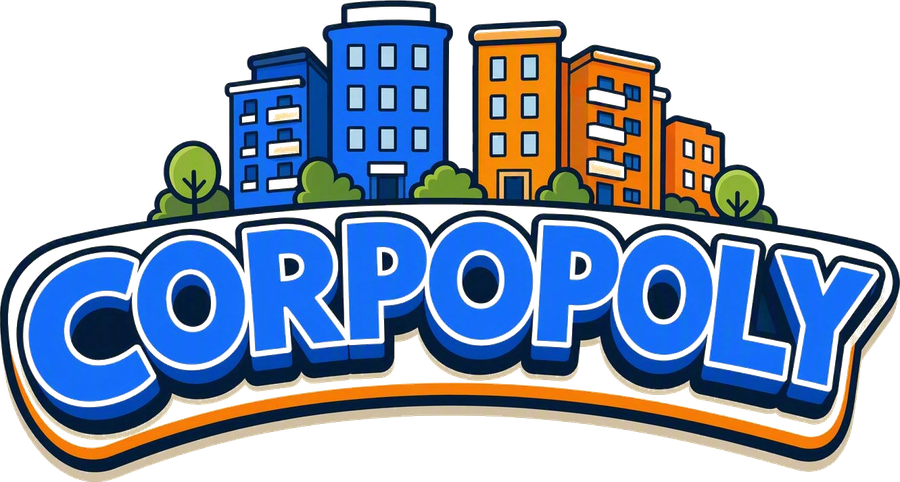

Simuleer elk scherm en elke feature - los van je echte spel. Sluit dit tabblad om terug te gaan.
Start hier altijd eerst een testspel met 2 fictieve teams (met wat munten en metrics erin, zodat effecten meteen zichtbaar zijn).
Springt direct naar de kaart-fase. Je kunt daarna gewoon verder klikken in het host-scherm hiernaast, precies als in een echt spel.
Trekt een opdrachtkaart en start meteen het gok-venster voor het wachtende team. Bekijk het speler-scherm rechts (kies het niet-actieve team hierboven bij de teamkiezer).
Simuleert een negatieve uitkomst en speelt het volledige effect af: popup weg, bord trilt, pionnen vallen, automatisch door naar de volgende beurt.
Trekt 40 opdrachtkaarten, om en om voor beide teams, en telt hoe vaak dezelfde kaart terugkomt (zou nu zelden/nooit moeten gebeuren binnen één spel).